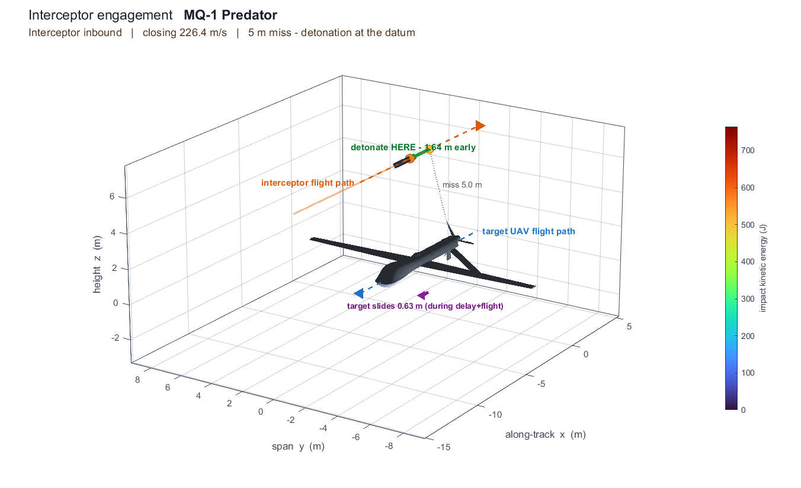
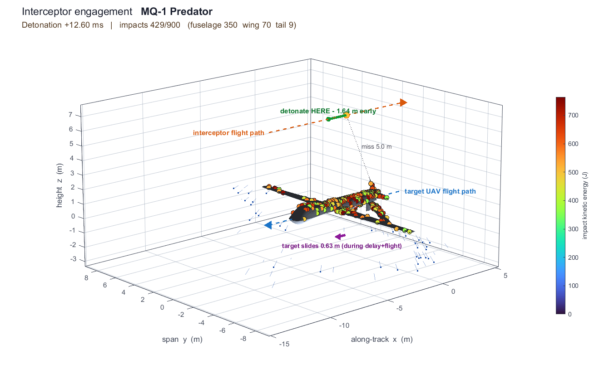
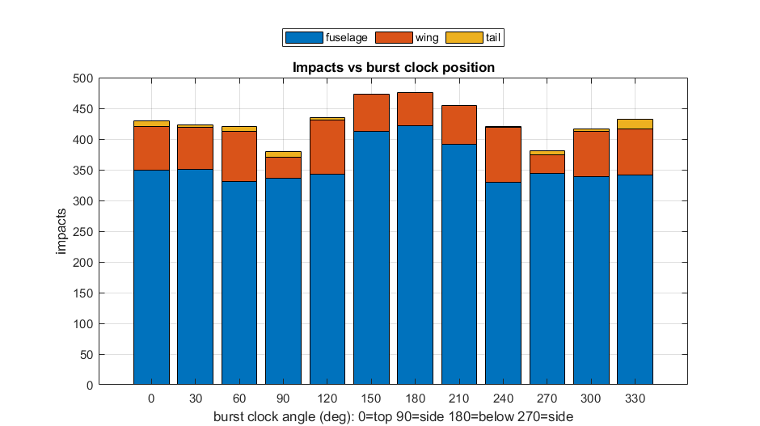

The interceptor closes head-on, the warhead detonates 5 m from the skin, and the fragment spray strikes the real 28,074-triangle drone — impacts coloured by kinetic energy.

Interceptor inbound — detonation at the datum, 5 m above the drone.

Impacts mapped onto the airframe, coloured by impact kinetic energy.
Every input is live — edit and re-run:

Built-in clock sweep (set one flag): impacts vs burst angle — here the best is around 150–180° (from below).
This runs natively in MATLAB — open runInterceptorSim.mlx and press Run; the 3-D
view appears in a MATLAB figure you can rotate, and the lead-distance answer prints to the command window.
Edit the numbers in Section 1 (burst distance, speeds, fragment count) and re-run. The burst shown is a
representative aimed spray for the 3-D study; drop in the mentor's full 1,004-fragment file for the
definitive coverage numbers. · ← project roadmap